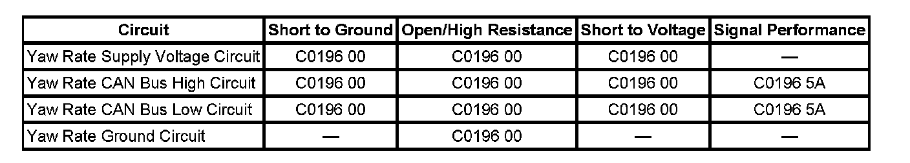

C0196
DTC C0196
DTC Descriptors
DTC C0196 00
Yaw Rate Circuit
DTC C0196 5A
Yaw Rate Circuit Erratic
Diagnostic Fault Information
Perform the Diagnostic System Check - Vehicle prior to using this diagnostic procedure. Initial Inspection and Diagnostic Overview

Circuit/System Description
The lateral accelerometer and the yaw rate sensors are combined into one sensor external to the electronic brake control module (EBCM). The vehicle stability enhancement system (VSES) uses the lateral accelerometer input when calculating the desired yaw rate. The usable output signal is a serial data signal CAN high and CAN low serial data circuits.
Conditions for Running the DTC
The ignition switch is in the ON position.
Conditions for Setting the DTC
^ The yaw/lateral combination sensor fails an internal self test.
^ Communication is lost between the EBCM and the yaw/lateral combination sensor.
^ The correlation error between the yaw/lateral combination sensor and steering angle sensor.
Action Taken When the DTC Sets
One or more of the following actions may occur:
^ The Vehicle Stability Enhancement System (VSES) is disabled.
^ Traction control system (TCS) is disabled.
^ The TCS/VSES indicators turn ON.
^ The driver information center (DIC) displays the Service Traction Control, and or Service Stabilitrak message.
Conditions for Clearing the DTC
^ The condition for the DTC is no longer present.
^ The EBCM automatically clears the history DTC when a current DTC is not detected in 100 consecutive drive cycles.
Diagnostic Aids
Possible causes of this DTC are as follows:
CAN HI and CAN LO circuits shorted together
CAN HI or CAN LO circuit shorted to ground
CAN HI or CAN LO circuit shorted to voltage
Reference Information
Schematic Reference
Antilock Brake System Schematics
Connector End View Reference
Antilock Brake System Connector End Views
Description and Operation
ABS Description and Operation (Under 8600 GVW ) ABS Description and Operation (Equal to or Over 8600 GVW)
Electrical Information Reference
^ Circuit Testing
^ Connector Repairs
^ Testing for Intermittent Conditions and Poor Connections
^ Wiring Repairs
Scan Tool Reference
Scan Tool Data List for EBCM
Circuit/System Verification
With scan tool installed, clear the DTCs then drive the vehicle in a straight line at a speed greater than 20 km/h (13 mph). If the DTC did not set as a current DTC see diagnostic aids.
Circuit/System Testing
1. Ignition OFF, disconnect the yaw rate/lateral accelerometer connector.
2. Test the yaw rate/lateral sensor reference voltage circuit for a short to voltage, short to ground, an open or high resistance.
^ If the reference voltage circuit did not test normal, repair the circuit.
3. Test the yaw/lateral sensor ground circuit for an open or high resistance.
^ If the reference ground circuit did not test normal, repair the circuit.
4. Test the yaw/lateral sensor CAN HI and LO circuit for a short to voltage, short to ground, an open or high resistance.
^ If the yaw/later CAN HI and LO circuits did not test normal repair the circuit.
5. Ignition ON, test the yaw/lateral sensor reference voltage circuit for 12 volts, and the ground circuit for an open or high resistance.
^ If the yaw/later 12-volt reference and ground circuits test normal replace the yaw/lateral sensor.
^ If the yaw/later 12-volt reference and ground circuits did not test normal replace the EBCM.
Repair Instructions
Diagnostic Repair Verification for EBCM
Repair Verification
Diagnostic Repair Verification